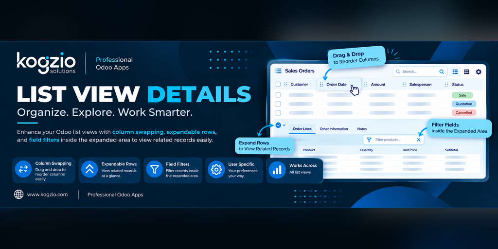
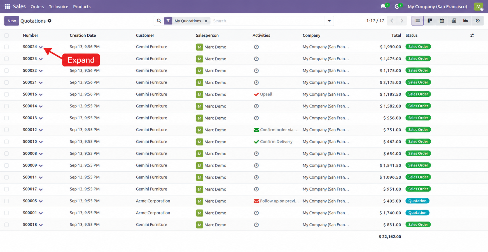
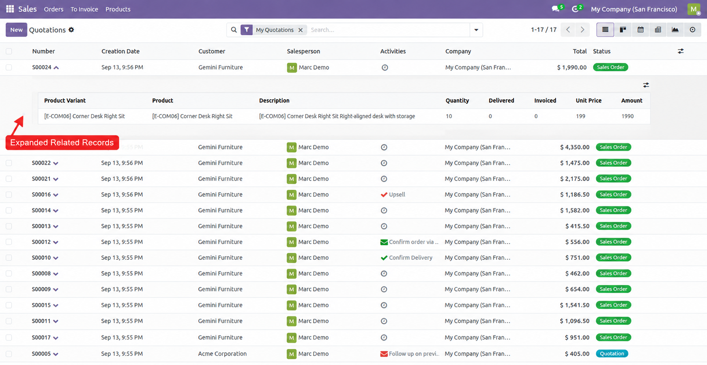
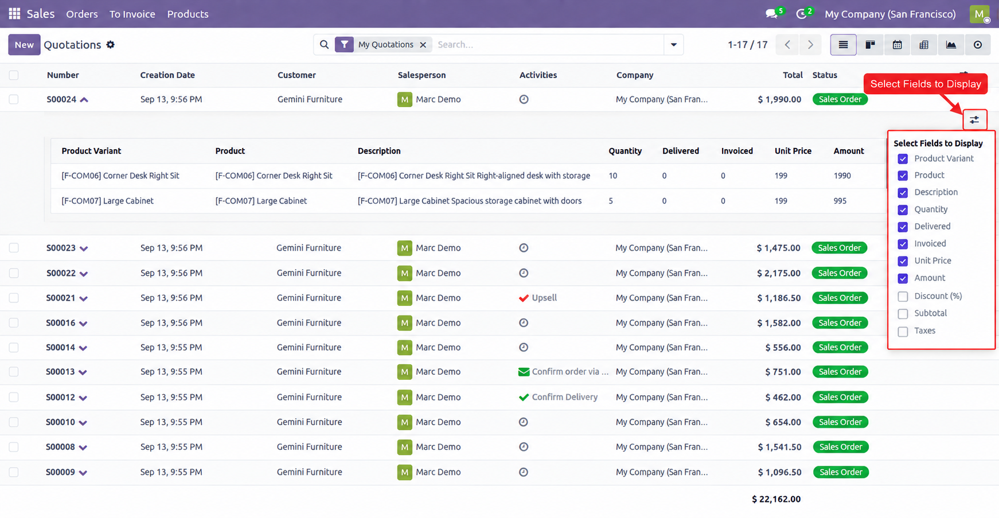
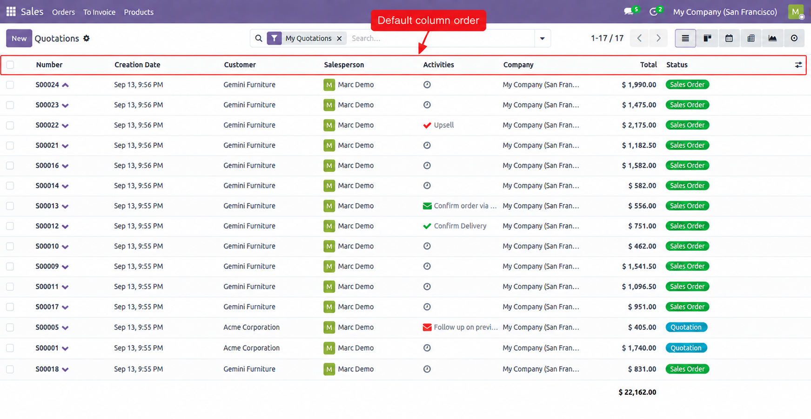
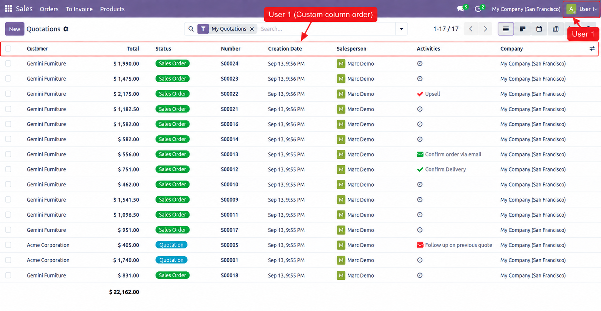
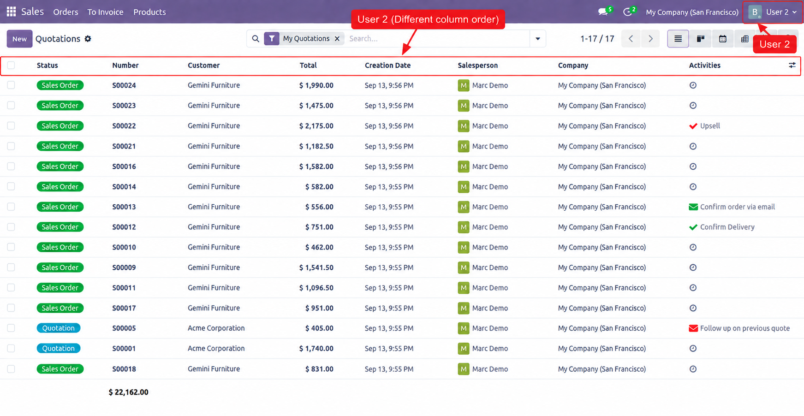

Enhance Odoo list views with expandable related records, selectable detail fields, and customizable column ordering. View related information directly from the list without repeatedly opening individual records. Built by Kogzio Solutions for Odoo Community and Enterprise.
List View Details improves the everyday Odoo list-view experience by bringing related information closer to the records users are already working with.
Users can expand a record to view related records, choose which detail fields are displayed, and rearrange list columns using drag and drop. Column preferences are stored per user and per list view, so different users can keep their own preferred layouts.
View related records directly inside the parent list view. Click the expand control on a record to reveal its related information without leaving the current screen.
The feature dynamically analyzes the form view associated with the current list view to identify applicable related-record fields. If a parent record has related records, they can be expanded and displayed directly underneath that record in the list view, without manually configuring the relationship.


Select multiple fields for the expanded related-record section using the field selector. Choose the information that is most useful for your workflow.

Rearrange columns directly in Odoo list views using drag and drop. No module-specific view configuration is required for each individual list view.
Column preferences are stored for the logged-in user and the specific list view. Two users can therefore work with the same list view while keeping different column arrangements.



Odoo 19.0
— Community Edition & Enterprise Edition
Depends on:
base
Developed by Kogzio Solutions
License: LGPL-3
Email:
info@kogzio.com
Website:
https://www.kogzio.com/